Quick Start: Typhoon HIL Control Center
Guidelines for all necessary software and/or hardware requirements in order to run your first example model in real-time simulation or TyphoonSim.
User Registration
In order to get started using Typhoon HIL Control Center (THCC), you need an appropriate activation key during the activation process. If you have purchased a HIL device, you will receive your activation key after your purchase of a HIL unit is processed. If you are only setting up a Virtual HIL license, please follow the instructions here to receive your activation key.
- Open an internet browser and navigate to TyphoonSim.
- Click on the Get a License button and fill in the form.
- After that, you will receive all the necessary information to your e-mail.
Registration for real-time/VHIL simulation in THCC consists of the following steps:
- Open an internet browser and navigate to the Subscription Portal.
- Click on the Sign up button in the bottom right
corner (Figure 1).
Figure 1. User login portal 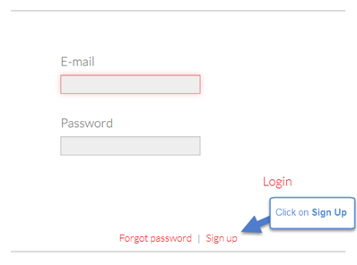
- The Registration page will open, where you can fill out a registration form
(Figure 2). You must enter all requested
information, including the activation key you
received previously.
Figure 2. Registration Form 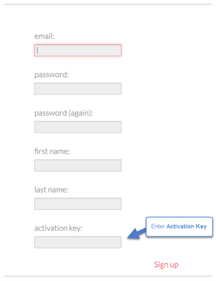
- You will receive a confirmation message on screen and via email to the
address provided (Figure 3). Follow the
instructions in your email message to activate your account.
Figure 3. Registration Confirmation Message 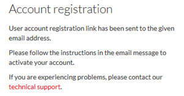
- After following the instructions in the email message, you will be
redirected to a new web page that informs you that your account is
successfully activated (Figure 4).
Figure 4. Successfully completed account activation 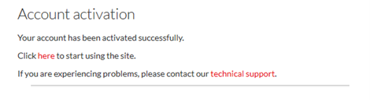
- You can now return to the Typhoon HIL Download page and login using your credentials (Figure 1).
Software Download
To begin, open an internet browser and navigate to the Subscription Portal.
If you already have an account, you can log in by clicking on the Login button (Figure 5).
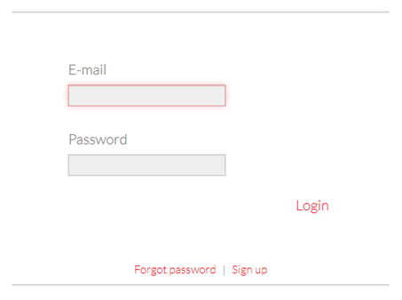
If you do not have a Typhoon HIL customer account, please create one following the steps in the User Registration section.
By logging in with a customer account, you can access the Download tab at the top of the screen (Figure 6).
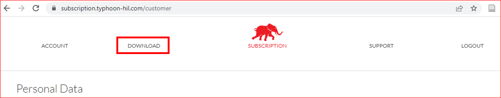
The Typhoon HIL Download site consists of four sections (pages). There you can download the latest software and firmware, and links to important documentation. In the Software download section (Figure 7), you can download the latest version of Typhoon HIL software and its appropriate dependencies. Older versions of the software are also accessible from the page.
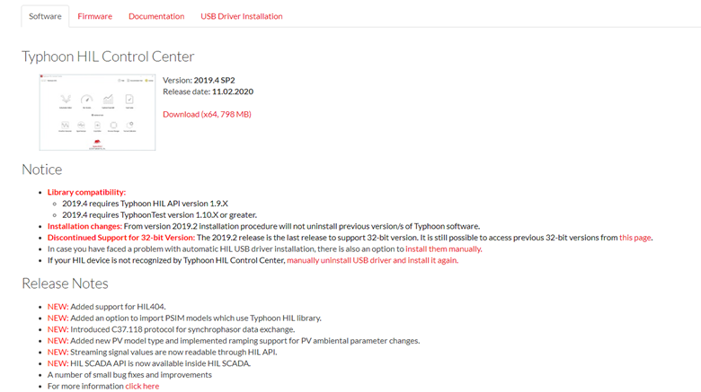
Software Installation and Configuration
Before installing the software, please verify that your system setup meets the recommended System Requirements and that you can access the Software tab in the Subscription Portal.
Installation steps - Windows 10/11
- Login to your Typhoon HIL account and download the latest version of the Typhoon HIL Control Center installation file from the Software tab in the Subscription Portal. If you don't have a user account, please follow the User Registration steps.
- Start the installation. Note: During installation, you can select the destination folder for the Typhoon HIL Control Center application. By default, it will be installed to a new folder at C:\Program Files\Typhoon HIL Control Center [software version number] (see Figure 8) for Windows installations or /opt/typhoon/typhoon_hil_control_center_[software version number] for Linux installations.
Figure 8. Destination Window 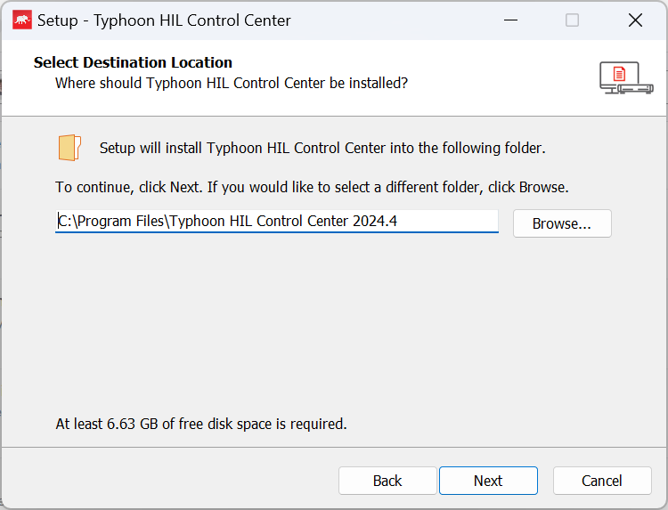
- At the end of the installation process, you will receive a message stating
you can now launch Typhoon HIL Control Center via the installed
shortcuts. For now, simply click Finish.
If you have your HIL device with you, you can now start HIL Driver Installation.
Figure 9. Complete the installation by clicking on Finish 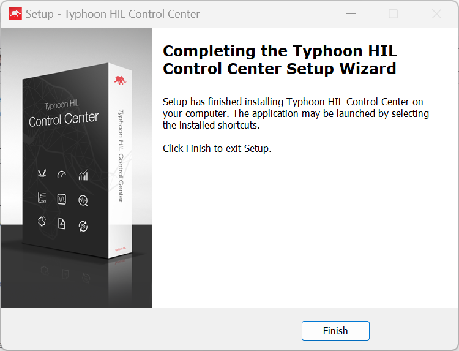
Installation:
Linux installation is command line based and the installer has a *.gzip.run extension. To run the installer, type the following as root (or use sudo):
# sh installation_file.gzip.run
$ sudo sh installation_file.gzip.runThe installer can be marked to run as an executable as follows:
$ chmod 775 installation_file.gzip.run
# ./installation_file.gzip.runor
$ sudo ./installation._file.gzip.runTyphoon HIL software will be installed in the /opt/typhoon/typhoon_hil_control_center_{version} directory, where {version} is the actual software version used.
After Install:
Every user with access to use the software should automatically be added to the `plugdev` group.
$ sudo usermod -a -G plugdev user_nameas this will enable USB access rights for that user. Changes will be activated only after the user logs in again or after computer restart.
If the required dependencies are not installed as part of installation, you can install them manually later by executing:
$ sudo dpkg --add-architecture i386
$ sudo apt-get -y update
$ sudo apt-get install -y build-essential libxcb-xinerama0 libc6:i386 libstdc++6:i386 zlib1g:i386Uninstallation:
To uninstall, simply remove the installation directory in /opt with:
$ sudo rm -rf /opt/typhoon/thcc-target-version
$ sudo rm -rf /usr/share/applications/typhoon_hil_control_center_{version}.desktopHIL Driver Installation
Once you have successfully installed the Typhoon HIL Control Center software, you can connect your HIL device to your testbed setup by using the USB cable you received in your Typhoon HIL package, and turn your HIL on. It is recommended to use a USB 3.0 port if available. USB drivers are automatically installed with Typhoon HIL Control Center software.
Once your drivers are successfully installed, start Typhoon HIL Control Center and check if your HIL device is detected by opening the Device Manager tool in the top left corner of the application. If detection is successful, you should be able to see your HIL device in the "Detected on network" section. If you instead get the message shown below, you must install the drivers manually. The procedure for manual driver installation is available in the Manual HIL USB Driver Reinstallation section of the USB connection to HIL Lost / Unable to detect HIL FAQ Guide.

Licensing
After starting the software, you must log in with the credentials you used in the User Registration section, in order to activate your license. Click on the login icon in the top right corner (Login to Typhoon HIL Control Center) and log in with your e-mail and password. The license will be pulled automatically.
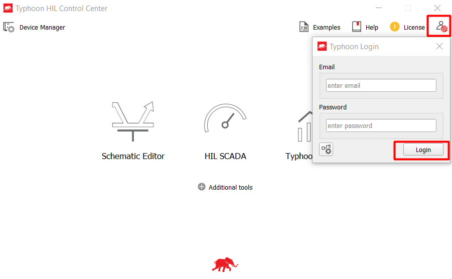
After logging in, you must restart the software to apply the license. If you logged in correctly, after restarting the software, the Login button will appear green. If you requested the license for TyphoonSim and it is approved, you will be able to use TyphoonSim inside the Typhoon HIL Control Center as well.
Alternatively, if you want to change the license manually, follow the steps below.
Manual license import and change
License files can be imported using the License panel in Typhoon HIL Control Center (Figure 12).
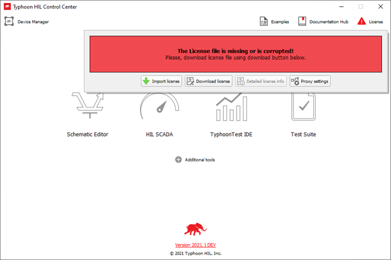
To import the license manually:
- Start Typhoon HIL Control Center
- Click the Download license button
- Enter your activation key
- The license should be automatically downloaded and imported, in which case you can now proceed to step 8
- Alternatively, you can download your license filed directly from your Subscription Portal account page
- Click License -> Import license
- Navigate to, select, and import the license file
- If the license file is successfully imported, the message shown in Figure 13 will popup
Figure 13. Successfully imported license file message 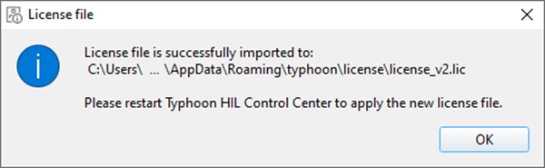
- Restart Typhoon HIL Control Center to apply the new license file
- If the license file is correctly imported, the license button will
appear green, as shown in Figure 14
Figure 14. Successfully imported license 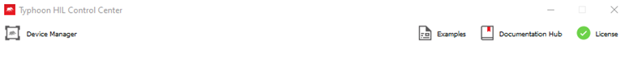
Once imported, the license will be saved in the license folder (typically C:\Users\[name_of_user]\AppData\Local\typhoon\license).
To change the license manually:
There is a button that allows you to manage/switch between multiple licenses. This is useful when a Virtual HIL user becomes a user of a HIL device, as well as for companies/users who have multiple sites.
- Start Typhoon HIL Control Center
- Click License -> Change license
- Enter your activation key
- The new license will be automatically applied
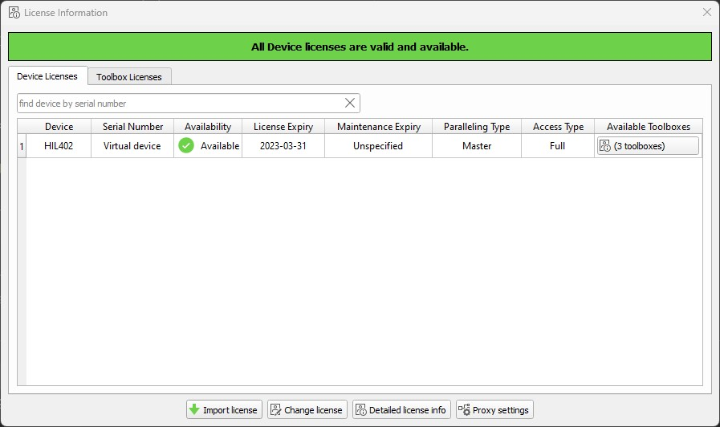
Syncing HIL Firmware in Device Manager
Device Manager allows you to automatically upgrade firmware on multiple HIL devices and customize their device settings. All device firmware files are packed together with the Typhoon HIL Control Center installation and an additional firmware download is not required.
Device Manager lets you either start the upgrade process on the desired device or, if your firmware is up to date, change your firmware configuration. Updating multiple connected devices of the same type is also possible; the Device Manager will update them sequentially, one at a time.
Perform the firmware upgrade procedure by following the steps below:
- Power up and connect the HIL device
Open Device Manager. Upon start, Device Manager will automatically detect all connected HIL devices and show their firmware status, as described in Table 1
Table 1. Meaning of firmware status icons Status icon Description 
Firmware is synced with the currently opened Typhoon HIL software installation. 
Firmware is out of sync with currently opened Typhoon HIL Control Center software. Firmware version may be older or newer than the THCC compatible version. Select the desired HIL device and click on the Sync Firmware button (
 ). Device Manager will find the appropriate firmware and start
the update process automaticallyNote: Sync Firmware will search for firmware files in the following locations:
). Device Manager will find the appropriate firmware and start
the update process automaticallyNote: Sync Firmware will search for firmware files in the following locations:- Installation folder/typhoon/apps/firmware_files
- %LOCALAPPDATA%\typhoon\firmware_files
- Remote download from the Typhoon HIL Subscription portal.
Firmware update progress for each selected device is shown in a separate window

The firmware upgrade or configuration change procedure can take more than a minute to complete. After updates are finished on all devices, an appropriate message is shown.

Running your first simulation
In order to run an example model in real-time simulation, follow the instructions in Running the Induction Machine Open-loop Control Example.
If you want to run an example model in TyphoonSim, follow the instructions in Run an example model in TyphoonSim within Typhoon HIL Control Center.
- Power on your HIL device.
- After opening Typhoon HIL Control Center, select the Examples Explorer icon and find the Induction
machine with open loop control model.
Figure 16. Induction machine with open loop control example in Typhoon HIL Control Center 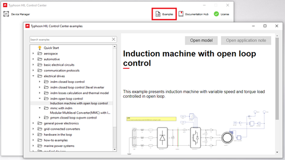
-
Select the Open model button.
Figure 17. How to open an example model 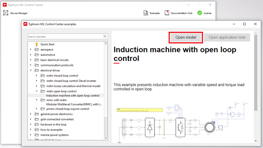
The model will now open in Schematic Editor. If this is your first time opening Schematic Editor, it may take some time while libraries are loaded.
Figure 18. Induction machine model in Schematic Editor 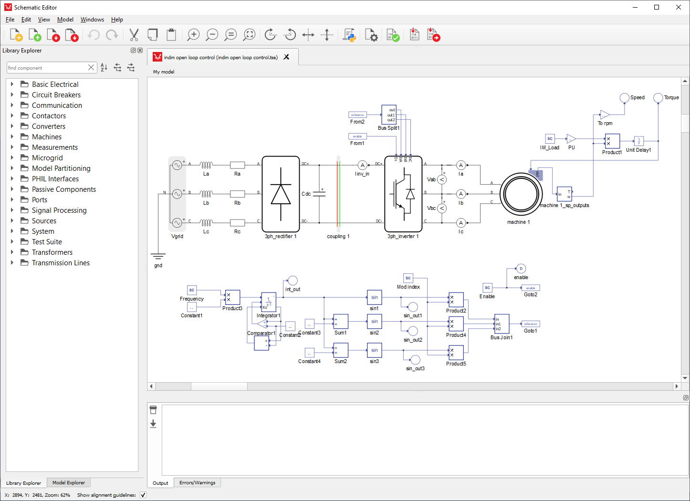
To run the simulation, press the Compile and load model in HIL SCADA button. After compilation has completed HIL SCADA will open.
Figure 19. Compile and load model in HIL SCADA button 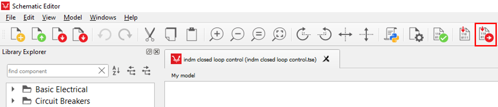
- When the compiled model is loaded into HIL SCADA, the
appropriate SCADA panel file for the particular model will be automatically
recognized and displayed below the label Panels files found in
Model directory. The SCADA Panel file for example models can
be found in the same folder where the model file is located.
Figure 20. Open SCADA panel in HIL SCADA 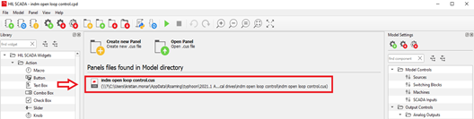
-
After loading the SCADA panel, the simulation can be started by pressing the Run button (Figure 21). The simulation will start and the signals observed from the simulation will be displayed in the Capture/Scope Widget (Figure 22).
Figure 21. Start the simulation 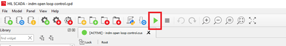
Figure 22. HIL SCADA Panel 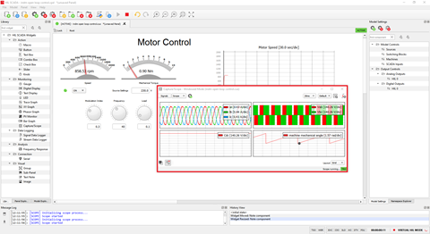
The Capture/Scope Widget is a powerful tool in which you can observe simulated signals. Signal settings and Display settings allow you to find and display a particular signal from the model and adjust its visual properties.
- HIL SCADA allows you to create a fully customized
user interface. You can monitor the simulation signals in many different
ways using a wide selection of Panel Widgets. This is
done by dragging and dropping widgets from the Library Explorer Dock,
which is on left side of the window (Figure 23). Once added, you can configure and use the
widgets to monitor or control model execution, either directly or by using
Python code. You can even group multiple widgets into your own custom Widget Libraries for use across
multiple panels. Furthermore, SCADA can be used as a human-machine interface
(HMI) towards external devices (controllers, laboratory equipment, etc.).
For more information on using widgets, please refer to the HIL SCADA documentation section.
Figure 23. HIL SCADA widgets 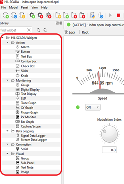
If no HIL device is connected, you will still have the option to compile and run the model using Virtual HIL. Virtual HIL is a software module within the Typhoon HIL software toolchain which emulates Typhoon HIL simulator devices in non-real time on a PC. Due to the software-based nature of Virtual HIL, there is no external IO support.
In case Virtual HIL is available for the compiled model (Figure 24), that option will also be shown.

When using Virtual HIL, you can select both which HIL device you would like to emulate and its device configuration in the Model -> Schematic Settings menu option in Schematic Editor (Figure 25). You can find out more in the Schematic Editor menus and toolbar documentation.
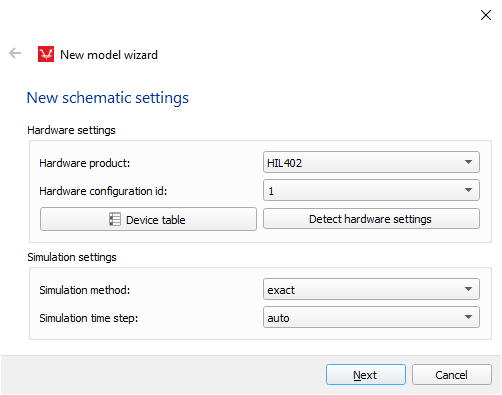
You can find a wide array of example models available in the Example Explorer window, sorted by application area (shown previously in Figure 16. Most example models do not require an external control which makes them especially suitable for simulating on Virtual HIL. Additionally, several models have accompanying Application Notes and accompanying Test Automation scripts. If you are just getting started with testing using Typhoon HIL software, it is recommended to select an example model that best fits your application and experiment with what modeling options best fit your needs.
More Information
For more information on Typhoon HIL software and hardware, please refer to the provided Typhoon HIL Documentation, which can be easily accessed on the web or offline via the Help button (shown in Figure 26).
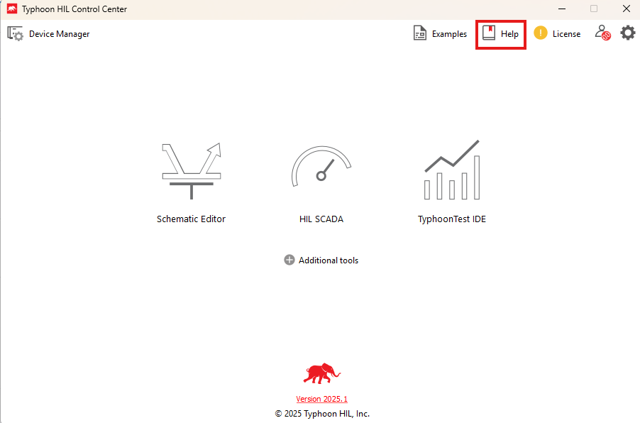
In order to run a model in TyphoonSim within Typhoon HIL Control Center, you should follow the instructions given in the Quick Start: TyphoonSim document: Running your first simulation. The only distinction is that you'll be running the Typhoon HIL Control Center software with integrated TyphoonSim, rather than the standalone version of TyphoonSim.